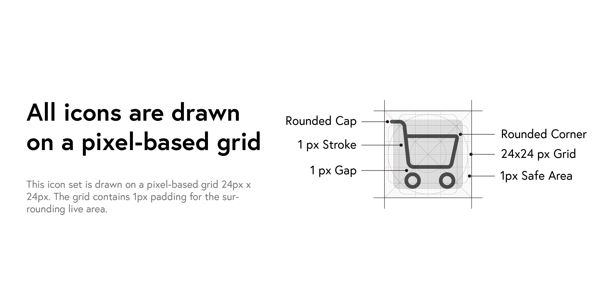

Zyxel Icon System
Iconset Design for Single Sign-On
To unify Zyxel platforms as a single sign-on portal, icons in the system should be coherence throughout the platforms. I reorganized each icons, and create new icons as needed considering all the design details to make them look nice, clean and congruous.
